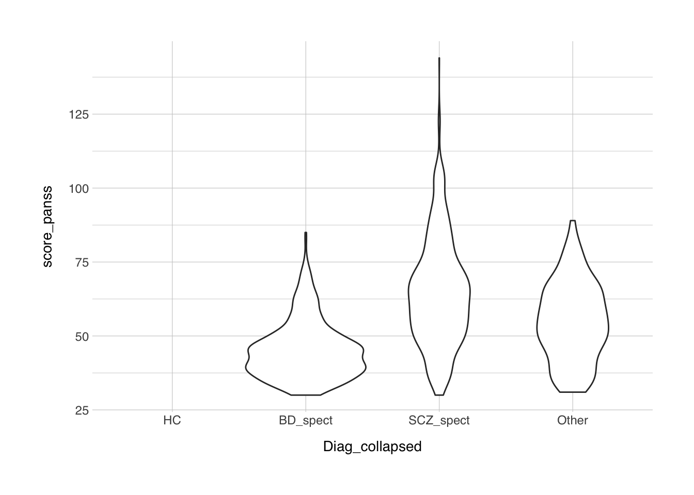
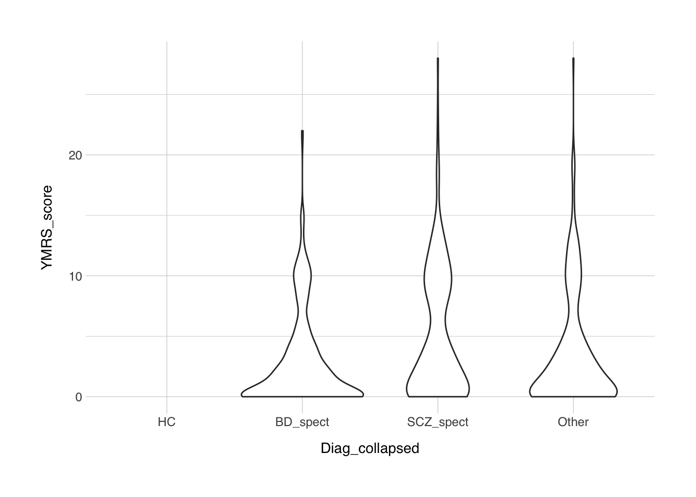
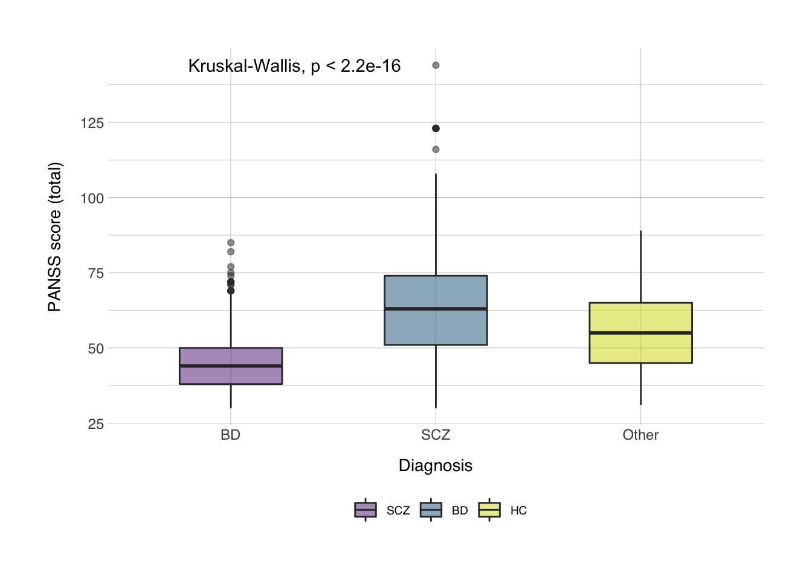
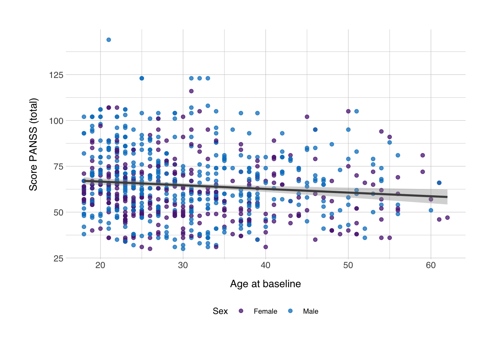

11 A Full Analysis Script
Okay, so all these code snippets are fun, but what would a full script look like? Here I’ll go through how I would typically write an analysis script. I’m sure those from others might look different, because they prefer to do things a little differently, but here’s mine. I’ll use some simulated data from TOP, so this is not real data. I’ll use a .csv-file here. If your data is currently in SPSS format, the easiest way to load this into R is by converting the SPSS file to a csv-file within SPSS. This is relatively simple:
Open your dataset in SPSS
Under the
Filetab, clickSave as...Under
Save as type:, selectComma delimited (*.csv)Also toggle the
Save value labels where defined instead of data valuesMake sure
Write variable names to fileis selected
Let’s now set up the packages that we want to use, and let’s load in the data with the read.table() function. The header option specifies whether the first line of the file should be considered a row with the column names, or variable names. The sep option specifies the delimiter for the file. If you exported from SPSS like described above, then the delimiter is a semicolon.
Then it’s generally best practice to inspect the data, so we can see what variables we have available with the names() function. If you’re working in Rstudio (which I recommend), then you can also just click on the data variable, or type View(data) to get a panel where the data is laid out like a spreadsheet, as you would get in SPSS.
## [1] "nnid" "Diag_category" "Gender" "Pasient_Kontroll"
## [5] "Ethnicity" "AgeBaseline" "score_panss" "score_g"
## [9] "score_n" "score_p" "YMRS_score"Next, let’s investigate, how many patients and how many controls do we have. The simplest way to do this is to create a table, using the table() function, we input to this the Pasient_Kontroll column.
##
## Control Patient
## 1221 1689Next, we also want to know what diagnoses our patients have, so we’ll do the same for the Diag_category column.
##
## bipolar I bipolar II
## 1248 305 183
## bipolarNOS cyclothym major depressive disorder
## 30 2 68
## other psychosis schizoaffective schizophrenia
## 218 136 667
## schizophreniform
## 53So now let’s say we want to compare schizophrenia spectrum with bipolar disorder spectrum patients. We then add to that column the diagoses, where we group the schizophrenia, schizophreniform, and schizoaffective patients together in one schizophrenia-spectrum group, and do the same for the bipolar patients. We can do this with the fct_collapse() function. We store the result in a new column in the data data frame, called Diag_collapsed. This function is very similar to the recode function in SPSS. There’s a little catch though. If you type levels(data$Diag_category). you get the different options that this variable can have. It’s similar to looking at the “values” column in SPSS’ variable tab. Here we can see that one of the levels is just " ", which is different from NA since it’s just a character string with one empty space. These indicate individuals that have no diagnosis (yet). If we could just recode all of these into "HC", that’d be great, but this column also involved patients that have no confirmed diagnosis yet. That’s why we also need a second option. Before we can recode, first we need to change the value in the Diag_collapsed column from subjects where the Pasient_Kontroll column indicates that it is a patient to "Other", which is likely the most appropriate value for now. The easiest way to do this was via indexing. An example: print(data$Diag_category) will give the same result as print(data[ ,"Diag_category"]). In indexing, the first position is for the row number, the second for the column name or number. Just for illustration, typing data[1000,"nnid"], will print the ID from the 1000th participant in the database. This is because indexing is done like this: data[<row>,<column>], if either the <row> or <column> in this example is left empty, then it will take all rows or column, for instance data[1000, ] will print all columns from the 1000th participant, while data[ ,"Diag_category"] will print the Diag_category column from all participants. Below, we’ll use it to select all rows where the Pasient_Kontroll column is equal to "Patient", and then apply the value "Other" only to the "Diag_collapsed" column. Afterwards, we can run the fct_collapse() function I discussed earlier.
## [1] " " "bipolar I" "bipolar II"
## [4] "bipolarNOS" "cyclothym" "major depressive disorder"
## [7] "other psychosis" "schizoaffective" "schizophrenia"
## [10] "schizophreniform"data[data$Pasient_Kontroll == "Patient" & data$Diag_category == " ", "Diag_collapsed"] = "Other"
data$Diag_collapsed <- fct_collapse(data$Diag_category,
SCZ_spect = c("schizophrenia", "schizophreniform", "schizoaffective"),
BD_spect = c("bipolar I", "bipolarNOS", "bipolar II"),
HC = " ",
group_other = TRUE)## Warning in fct_collapse(data$Diag_category, SCZ_spect = c("schizophrenia", : `group_other`
## is deprecated. Please use `other_level` insteadNow we have a column called Diag_collapsed that has four levels: "SCZ_spect", "BD_spect", "Other", and "HC". So what are the numbers now?
##
## HC BD_spect SCZ_spect Other
## 1248 518 856 288Suppose we’re interested in YMRS and PANSS scores. Let’s immediately dive into some plotting.
ggplot(data = data, mapping = aes(x = Diag_collapsed, y = score_panss)) +
geom_violin() +
theme_norment()## Warning: Removed 1286 rows containing non-finite values (stat_ydensity).
ggplot(data = data, mapping = aes(x = Diag_collapsed, y = YMRS_score)) +
geom_violin() +
theme_norment()## Warning: Removed 1445 rows containing non-finite values (stat_ydensity).
From these plots we can see that the data is quite skewed, especially the YMRS. So before we want do any statistics, we should probably quantify whether the data is normally distributed. For this we have the shapiro.test() that we’ve used before.
##
## Shapiro-Wilk normality test
##
## data: data$score_panss
## W = 0.94831, p-value < 2.2e-16##
## Shapiro-Wilk normality test
##
## data: data$YMRS_score
## W = 0.80452, p-value < 2.2e-16So it appears that both variables are significantly different from a normal distribution, so we violate some assumptions of the statistical tests we might do, such as the T-test and the ANOVA and in general all parametric tests. So we need to consider a non-parametric test. Since we’re interested only in the comparison between schizophrenia, bipolar disorder, and healthy controls, we remove all incidences of "Other" from the dataset, we do this by using the filter() function. We’ve used the == operator before, but now we’ll use the opposite !=, which translates to “not equal to”. Then we’ll use the non-parametric equivalent of the ANOVA, which is the Kruskal-Willis test, implemented in R with the kruskal.test() function.
##
## Kruskal-Wallis rank sum test
##
## data: score_panss by Diag_collapsed
## Kruskal-Wallis chi-squared = 432.71, df = 3, p-value < 2.2e-16Then we’ll want to make some plot, preferably a pretty boxplot. Note that since healthy controls don’t have a score on either the PANSS or the YMRS, this will be empty, and R will tell you that it couldn’t show a number of rows.
data_plot <- filter(data, Diag_collapsed != "HC")
bplot <- ggplot(data_plot, aes(x = Diag_collapsed, y = score_panss, fill = Diag_collapsed)) +
geom_boxplot(width = 0.5, alpha = 0.5) +
stat_compare_means(method = "kruskal") +
labs(x = "Diagnosis",
y = "PANSS score (total)",
fill = NULL) +
scale_x_discrete(labels = c("BD", "SCZ","Other")) +
scale_fill_norment(discrete = TRUE, palette = "powerpoint", labels = c("SCZ", "BD", "HC")) +
theme_norment() +
theme()
print(bplot)
ggsave(plot = bplot, file = "figures/boxplot.png")## Saving 7 x 5 in image
The ggsave() function saves the plot as an image in the working directory specified. If you don’t specify a folder, it will save it in the current working directory, you can get the current working directory by typing getwd().
Let’s also run a correlation, between the age and the score on the PANSS for patients with schizophrenia only. We can do this with the cor.test() function. You input the two columns you want to use, and the most appropriate method (either "pearson", "kendall", or "spearman").
data_scz <- filter(data, Diag_collapsed == "SCZ_spect")
cor.test(data_scz$AgeBaseline, data_scz$score_panss, method = "spearman")## Warning in cor.test.default(data_scz$AgeBaseline, data_scz$score_panss, : Cannot compute
## exact p-value with ties##
## Spearman's rank correlation rho
##
## data: data_scz$AgeBaseline and data_scz$score_panss
## S = 109823369, p-value = 0.0002118
## alternative hypothesis: true rho is not equal to 0
## sample estimates:
## rho
## -0.1277889Let’s also make a scatter plot to see if this makes sense.
scplot <- ggplot(data_scz, aes(x = AgeBaseline, y = score_panss, color = Gender)) +
geom_point(alpha = 0.75) +
geom_smooth(method = "lm", color = "grey30") +
labs(x = "Age at baseline",
y = "Score PANSS (total)",
color = "Sex") +
scale_color_norment(discrete = TRUE, palette = "logo") +
theme_norment() +
theme()
print(scplot)## `geom_smooth()` using formula 'y ~ x'## Saving 7 x 5 in image
## `geom_smooth()` using formula 'y ~ x'
Yes, it does, it seems there’s no direct association between age and PANSS, I’ll just say that I’m not a psychologist, and I’m not sure whether we should expect a correlation and what important covariates I missed, but this is just for illustration purposes.
All in all, this is what a simple script would look like. In the full script below I’ve added comments to make things clearer. If you hadn’t noticed it yet, comments are added by typing #, followed by whatever your comment is. Comments are not evaluated when running the code.
# Load packages ####
library(tidyverse)
library(ggpubr)
library(normentR)
# Load data ####
data <- read.csv2("TOPdemographics.csv")
# Inspect data ####
names(data)
table(data$Pasient_Kontroll)
table(data$Diag_category)
# Collapse diagnoses ####
levels(data$Diag_category)
data[data$Pasient_Kontroll == "Patient" & data$Diag_category == " ", "Diag_collapsed"] = "Other"
data$Diag_collapsed <- fct_collapse(data$Diag_category,
SCZ_spect = c("schizophrenia", "schizophreniform", "schizoaffective"),
BD_spect = c("bipolar I", "bipolarNOS", "bipolar II"),
HC = " ",
group_other = TRUE)
table(data$Diag_collapsed)
# Inspect clinical variables ####
ggplot(data = data, mapping = aes(x = Diag_collapsed, y = score_panss)) +
geom_violin() +
theme_norment()
ggplot(data = data, mapping = aes(x = Diag_collapsed, y = YMRS_score)) +
geom_violin() +
theme_norment()
# Run statistics ####
# Test for normality
shapiro.test(data$score_panss)
shapiro.test(data$YMRS_score)
# Kruskal-Wallis
data_clean <- filter(data, Diag_collapsed != "Other")
kruskal.test(formula = score_panss ~ Diag_collapsed, data = data_clean)
data_plot <- filter(data_clean, Diag_collapsed != "HC")
# Create boxplot
bplot <- ggplot(data_plot, aes(x = Diag_collapsed, y = score_panss, fill = Diag_collapsed)) +
geom_boxplot(width = 0.5, alpha = 0.5) +
stat_compare_means(method = "kruskal") +
labs(x = "Diagnosis",
y = "PANSS score (total)",
fill = NULL) +
scale_x_discrete(labels = c("BD", "SCZ")) +
scale_fill_norment(discrete = TRUE, palette = "powerpoint", labels = c("BD", "SCZ")) +
theme_norment() +
theme()
print(bplot)
ggsave(plot = bplot, file = "boxplot.png")
# Correlation between age and PANSS
data_scz <- filter(data_clean, Diag_collapsed == "SCZ_spect")
cor.test(data_scz$AgeBaseline, data_scz$score_panss, method = "spearman")
scplot <- ggplot(data_scz, aes(x = AgeBaseline, y = score_panss, color = Gender)) +
geom_point(alpha = 0.75) +
geom_smooth(method = "lm", color = "grey30") +
labs(x = "Age at baseline",
y = "Score PANSS (total)",
color = "Sex") +
scale_color_norment(discrete = TRUE, palette = "logo") +
theme_norment() +
theme()
print(scplot)
ggsave(scplot, file = "scatterplot.png")